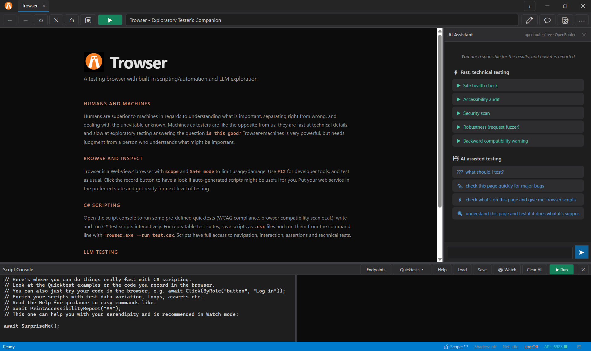

Trowser
Exploratory Tester’s Companion
A real Windows browser for testing, built on 28 years of exploratory testing.
Run quicktests, write your own, and let an LLM explore beside you.
You stay responsible for what matters.
Freeware with the purpose to enable more and better exploratory testing.

Humans and machines
Humans are better at judging what is important, separating right from wrong, and dealing with the unknown. Machines are fast at technical detail and slow at exploratory judgment. Trowser is powerful, but still needs a person who understands what matters.
What you get
Browse and inspect
WebView2 browser with scope and Safe mode, F12 tools, session log, and a record button that turns exploration into a C# script.
C# scripting
Script Console with quicktests for accessibility, performance,
security, compatibility, and more—or write your own .csx files.
LLM-ready API
REST and MCP on localhost:6923 so agents can snapshot the page,
click by ref, run scans, and report findings while you steer.
LLM usage
Use Chat window for smaller work with your API key (OpenRouter free is default). For larger sessions, recommendation is to point your agent of choice to the REST API and documentation (use appropriate files from trowserkit folder.) Your prompts steer the work, and your judgment is needed on the results.
MCP: POST http://localhost:6923/mcp
REST: http://localhost:6923 with Authorization: Bearer <api-key>
Start here: API index · llms.txt · in-app manual
Links
- Download Trowser.zip for Windows
- Taming the Trowser PDF guide
- YouTube demo see it in action
- Built-in manual getting started & design ideas
- FAQ newcomer questions
- Script Console help API for .csx scripts
- REST & MCP index endpoints and tools
- Issue tracking bugs and ideas
Requirements: Windows 64-bit (or emulator) with WebView2 Runtime (included with Edge). Read security notes before pointing it at production systems.